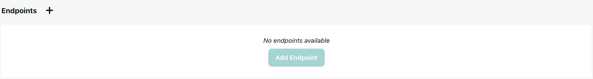

Development Setup with Webhooks¶
This guide explains how to set up a webhook application (FastAPI, Quart, Flask, etc.) to receive events from the Unique platform. It covers two scenarios:
- Deployed applications: Applications that are already accessible from the Unique backend
- Local development: Using ngrok for local development when your application is not directly accessible
Configuration¶
The following environment variables must be configured in a unique.env file or in your environment when developing with webhooks:
UNIQUE_API_BASE_URL= # The backend URL of Unique's public API
UNIQUE_API_VERSION= # The version of Unique's public API
UNIQUE_APP_ID= # The app ID as obtained in the App section of Unique
UNIQUE_APP_KEY= # The app key as obtained in the App section of Unique
UNIQUE_APP_ENDPOINT= # The application endpoint URL where your app is reachable (**CHECK THIS**)
UNIQUE_APP_ENDPOINT_SECRET= # The app endpoint secret provided by the platform (**CHECK THIS**)
Example Application¶
Creating the App¶
The following example demonstrates a minimal application setup:
import logging
from pathlib import Path
from unique_toolkit.app.fast_api_factory import build_unique_custom_app
from unique_toolkit.app.schemas import ChatEvent, EventName
from unique_toolkit.app.unique_settings import UniqueSettings
logger = logging.getLogger(__name__)
# Event handler - implement your business logic here
def chat_event_handler(event: ChatEvent) -> int:
"""
Handle incoming chat events from the Unique platform.
Implement your custom logic here to process webhook events.
"""
# TODO: Implement your event handling logic
logger.info(f"Received event: {event}")
return 0
# Create the app instance at module level
# This must be at module level so uvicorn can find it when importing
_SETTINGS = UniqueSettings.from_env(env_file=Path(__file__).parent / "unique.env")
_SETTINGS.init_sdk()
# Create the app using the factory
_MINIMAL_APP = build_unique_custom_app(
title="Unique Minimal Chat App",
settings=_SETTINGS,
event_handler=chat_event_handler,
event_constructor=ChatEvent,
subscribed_event_names=[EventName.EXTERNAL_MODULE_CHOSEN]
)
Running the Application¶
To run the application locally:
import logging
import uvicorn
if __name__ == "__main__":
# Enable debug logging
logging.basicConfig(
level=logging.DEBUG,
format="%(asctime)s - %(name)s - %(levelname)s - %(message)s",
)
uvicorn.run(
"fastapi_app_minimal:_MINIMAL_APP",
host="0.0.0.0",
port=5001,
reload=True,
log_level="debug",
)
Full Example File
import logging
from pathlib import Path
from unique_toolkit.app.fast_api_factory import build_unique_custom_app
from unique_toolkit import (
ChatService,
KnowledgeBaseService,
LanguageModelName,
)
from unique_toolkit.app.schemas import ChatEvent
from unique_toolkit.app.unique_settings import UniqueSettings
from unique_toolkit.framework_utilities.openai.message_builder import (
OpenAIMessageBuilder,
)
from unique_toolkit.app.schemas import ChatEvent, EventName
logger = logging.getLogger(__name__)
# Default event handler
def chat_event_handler(event: ChatEvent) -> int:
"""
Default event handler that echoes back the user's message.
This is a simple example that demonstrates:
- Initializing services from the event
- Building messages with OpenAIMessageBuilder
- Using complete_with_references for AI responses
"""
# Initialize services from event
chat_service = ChatService(event)
kb_service = KnowledgeBaseService.from_event(event)
# Build messages
messages = (
OpenAIMessageBuilder()
.system_message_append(content="You are a helpful assistant")
.user_message_append(content=event.payload.user_message.text)
.messages
)
# Complete with references
chat_service.complete_with_references(
messages=messages,
model_name=LanguageModelName.AZURE_GPT_4o_2024_1120,
)
return 0
# Create the default app instance at module level
# This MUST be at module level so uvicorn can find it when importing
_SETTINGS = UniqueSettings.from_env(env_file=Path(__file__).parent / "unique.env")
_SETTINGS.init_sdk()
# Create app using factory
_MINIMAL_APP = build_unique_custom_app(
title="Unique Minimal Chat App",
settings=_SETTINGS,
event_handler=chat_event_handler,
event_constructor=ChatEvent,
subscribed_event_names=[EventName.EXTERNAL_MODULE_CHOSEN]
)
if __name__ == "__main__":
import logging
import uvicorn
# Initialize settings
# Enable debug logging
logging.basicConfig(
level=logging.DEBUG,
format="%(asctime)s - %(name)s - %(levelname)s - %(message)s",
)
uvicorn.run(
"fastapi_app_minimal:_MINIMAL_APP",
host="0.0.0.0",
port=5001,
reload=True,
log_level="debug",
)
Exposing Your Application¶
When Your Application is Already Exposed¶
If your application is already deployed and accessible from the Unique backend (e.g., https://your-app.example.com or an internal service URL reachable from the backend's network), you can use that URL directly:
-
Set
UNIQUE_APP_ENDPOINTto your application URL with the/webhookpath:UNIQUE_APP_ENDPOINT=https://your-app.example.com/webhook -
Follow the steps in Registering the Endpoint and Configuring Environment Variables below.
No ngrok Required
You do not need ngrok when your application is already accessible from the Unique backend.
Using ngrok for Local Development¶
Security Consideration
This solution should only be used when working with non-critical data. When using ngrok, all webhook events and data are routed through ngrok's external infrastructure. This means your data passes through a third-party service, which may not be suitable for sensitive or critical information. For production deployments or when handling sensitive data, use a properly deployed application that is directly accessible from the Unique backend.
ngrok is only required when developing locally and your application is not accessible from the Unique backend. During local development, your application typically runs on localhost (e.g., http://localhost:5001), which is not accessible from the Unique platform's backend. ngrok creates a secure tunnel that makes your local application accessible from the Unique backend.
Setting Up ngrok¶
-
Run your application locally (e.g., using the debugger). It will be exposed locally under
http://localhost:5001. -
Install ngrok if you haven't already.
-
Start ngrok to create a tunnel to your local application:
ngrok http 5001 -
ngrok will display a console with connection details:
ngrok ⚠️ Free Users: Agents ≤3.18.x stop connecting 12/17/25. Update or upgrade: https://ngrok.com/ pricing Session Status online Account <redacted> (Plan:Free) Update update available (version 3.33.0, Ctrl-U to update) Version 3.25.0 Region Europe (eu) Latency 16ms Web Interface http://127.0.0.1:4040 Forwarding https://<this>-<is>-<redacted>.ngrok-free.dev -> http://localhost:5001 Connections ttl opn rt1 rt5 p50 p90 15 0 0.00 0.00 10.77 163.64 HTTP Requests -
Copy the forwarding URL (e.g.,
https://<this>-<is>-<redacted>.ngrok-free.dev). This URL is now accessible from the Unique backend and forwards requests to your local application. -
Follow the steps in Registering the Endpoint and Configuring Environment Variables below, using the ngrok URL.
ngrok Free Tier Limitation
With ngrok's free tier, the URL changes each time you restart ngrok. You'll need to update UNIQUE_APP_ENDPOINT in your environment and re-register the endpoint in the platform each time you restart ngrok.
Registering the Endpoint¶
The endpoint URL must be registered in the endpoint section of the App you created in the Unique platform:

When creating the endpoint:
- URL: Use your application URL (from ngrok or your deployment) with
/webhookappended (e.g.,https://your-app.example.com/webhookorhttps://<this>-<is>-<redacted>.ngrok-free.dev/webhook) - Name and Description: Provide a name and description for the endpoint
- Event Subscription: Select the events your app subscribes to. For custom chat applications,
unique.chat.external-module.chosenis required.

Configuring Environment Variables¶
After registering the endpoint, add the following to your unique.env:
UNIQUE_APP_ENDPOINT=https://your-app.example.com/webhook
UNIQUE_APP_ENDPOINT_SECRET=usig_<redacted>
Replace https://your-app.example.com/webhook with your actual endpoint URL (from ngrok or your deployment).
Troubleshooting¶
ngrok Issues (Local Development Only)¶
If you're using ngrok for local development, you may encounter these issues:
- URL changes on restart: This is expected with ngrok's free tier. Update
UNIQUE_APP_ENDPOINTin your environment and re-register the endpoint in the platform each time you restart ngrok - Connection refused: Ensure your FastAPI app is running on the correct port (default: 5001) before starting ngrok
- ngrok not starting: Check if port 4040 is already in use (ngrok web interface)
- Tunnel not working: Verify ngrok is forwarding to the correct local port
Webhook Not Receiving Events¶
These issues apply whether you're using ngrok or a deployed application:
- Endpoint not registered: Verify the endpoint is registered in the platform with the correct URL (including
/webhook) - Wrong event subscription: Ensure you've subscribed to
unique.chat.external-module.chosenfor chat events - URL mismatch: The URL in your environment must exactly match the one registered in the platform
- Secret mismatch: Verify
UNIQUE_APP_ENDPOINT_SECRETmatches the secret from the platform - Application not running: Ensure your application is running and accessible on the configured endpoint
Debugging Tips¶
- If using ngrok: Check the ngrok web interface at
http://127.0.0.1:4040to see incoming requests and verify the tunnel is active - Enable logging: Enable debug logging in your FastAPI app to see incoming webhook requests
- Test locally: Test the endpoint locally first before exposing via ngrok or deploying
- Verify connectivity: Verify your application can receive HTTP POST requests on the configured endpoint